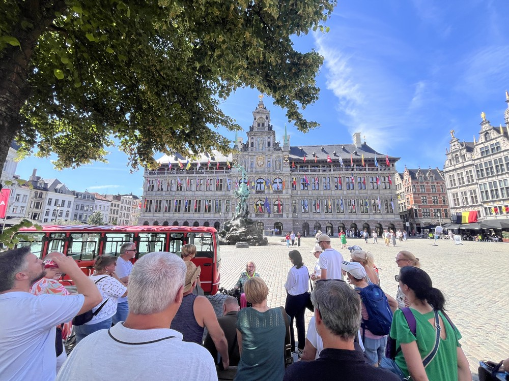

Fake news tour Antwerp
Remarkable stories, clever misdirection and surprising truths. It is up to you to separate fact from fiction.
View detailsCity and museum tours
Marie-Hélène guides you through art, architecture, heritage and details you might otherwise miss, clearly told and tailored to your group.

From unexpected city stories to art and heritage. Choose an existing tour or request a tailor-made experience.
Remarkable stories, clever misdirection and surprising truths. It is up to you to separate fact from fiction.
View details
Exuberant façades and stories with a twist. Discover which anecdotes are true and which are just a little too good.
View details
Take a closer look at the art, history and symbolism of this monumental Antwerp landmark.
View details
Discover a surprising side of Berchem, rich in local stories. Which facts are true and which are particularly well invented?
View details
Een toegankelijke kennismaking met de mooiste plekken, markante figuren en historische verhalen van Antwerp.
View details
Ontdek hoe kunstenaars anders kijken naar de wereld en laat hedendaagse kunst nieuwe vragen oproepen.
View details
Featured
Be surprised by Zurenborg’s architecture and stories in which nothing is quite as it seems. What is true, what is not, and what turns out to be stranger than fiction?
Discover this tourMarie-Hélène guides you through Antwerp’s most beautiful places, distinctive architecture and stories that bring the city’s history to life. Even those who already know Antwerp will see it differently afterwards.


Share an experience to remember
Planning a team event, family celebration, school activity or day out with friends? Tell Marie-Hélène what you are looking for. She will suggest a tour that suits your interests, pace and occasion.
Discuss your idea